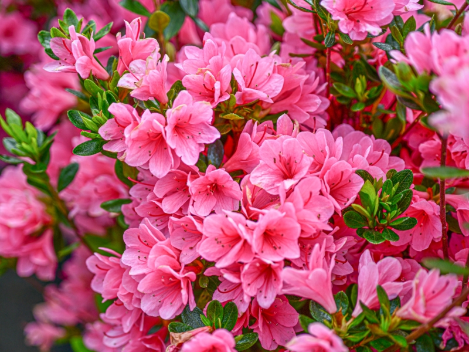
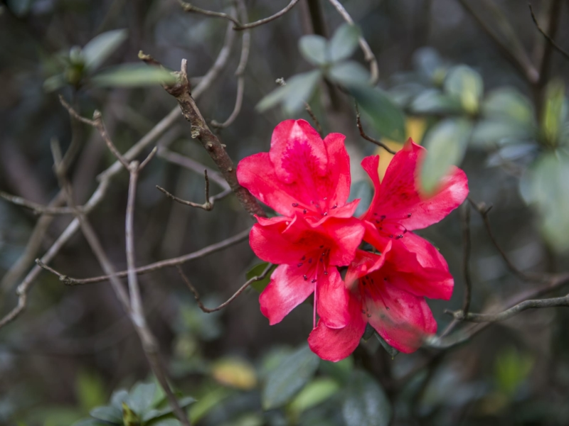
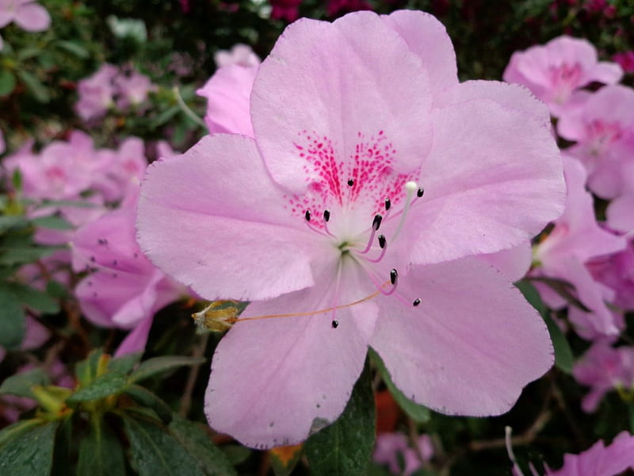
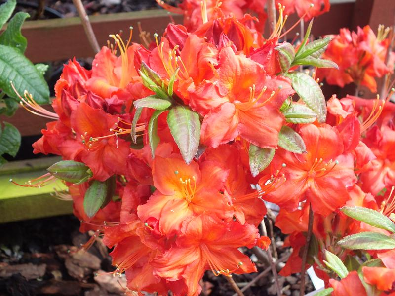

Meaning: Fragility, Temperance
Origin
The azalea is notoriously fragile and difficult to grow. The beautiful, tender blossoms only last for a short time before tumbling to the ground. Along with this, its shallow roots do not tolerate overwatering, hence its association with temperance.
Gallery



